信用研究 AI Analyst
固收投资 AI 课题成果汇报
全球视野本土研究
2026 年 7 月
固定收益
固定收益
2
目录
01信用研究 AI Analyst
02Agent 设计和工作流程
03Agent 设计遇到的问题和经验分享
04下一步计划
01
企业信用研究 AI Analyst
课题实施情况和成果成效
4
信用研究 AI Analyst
- 企业信用研究 AI Analyst 是固收团队基于可复用技能（Skill）框架开发的信用研究 Agent。团队将基础规则（数据提取逻辑、计算公式、报告模板）、方法论（信用评级方法论）、决策逻辑（实际工作中累积的经验与判断标准）等知识和经验结构化沉淀，写入 Agent 的 Skill 体系。这一过程实现了从"人的经验"到"机器可理解的知识"的转化。
- 在此基础上，团队构建了可由 Agent 自主执行的信用评级工作流程，使 Agent 独立完成从信息收集到报告交付的全流程工作。
- 以标准测试项目为例，Agent 在约 1.5 小时的有效处理时间内，协同多个专业子代理检索、解析、核验并整理 60 余份各类研究资料，完成 8 个研究阶段。
- 展望将来，通过持续的"反馈学习"，信用研究 Agent 将不断迭代成长，提升对复杂案例中的分析和判断能力，并将每一次学习成果和研究报告沉淀为组织永久性的知识资产。
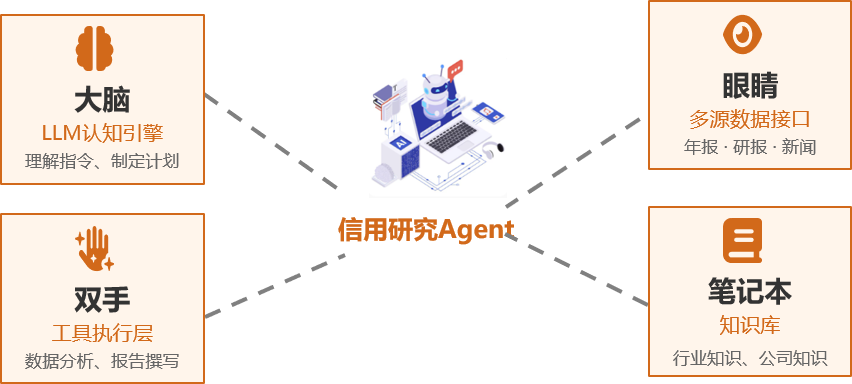
"AI Analyst 作为团队的一部分，帮助放大团队的能力，使团队将精力聚焦于高价值的深度分析与投资决策"
5
信用研究 Agent 课题交付成果
- 基于 Agent 通用性的考量，我们首先选择开发非金融企业信用研究 Agent —— 非金融企业信用研究 AI Analyst 1.0 版本。
- 开发和测试期间，项目小组已完成超过 20 家发行人信用评级，累计产出信用研究报告 20 篇。
- Agent 在海量资料阅读、信息整合、报告和图表生成、交付时效性上展现出显著优势。
- 同步创建 2 项辅助工具：
- 覆盖卖方门户的研报与路演材料自动检索下载工具；
- 内评报告库自动归档和项目管理工具。
做什么
- 自动资料搜索
- 多源数据自动筛选和整合
- 内评打分卡自动评分
- 图表自动创建与插入
- 首次评级报告初稿撰写
不做什么
- 超出方法论范围的判断
- 非标准化特殊情形处理
AI Analyst 内评和外评结果比较
AI Analyst 内评结果分布
6
企业信用研究 AI Analyst —— 交付报告
7
企业信用研究 AI Analyst —— 交付打分卡
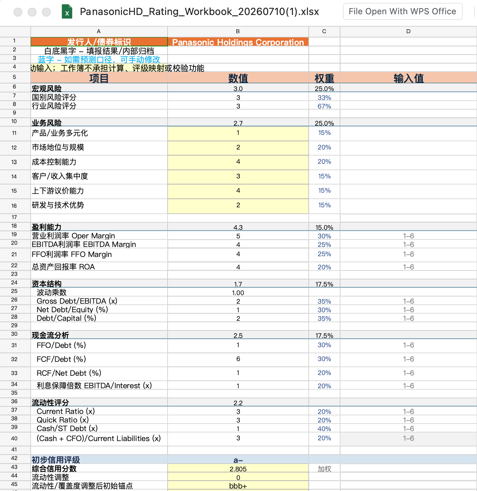
8
信用研究 AI Analyst 成效
核心成效：企业信用研究 Agent 帮助固定收益投研团队显著提效，将信用研究方法论转化为可执行、可复用、可追踪、可不断迭代更新的 AI 工作流。
效率大幅提升
首次评级报告生成从数天缩短至 1-2 小时，研究效率极大提升
经验数字化
多年积累的信用判断标准转化为可一致执行、可追溯的评级引擎
知识资产沉淀
将每一次研究成果累积为组织的永久知识库
质量可控可追溯
内评打分卡与外部评级对比验证，评分逻辑可追溯
覆盖范围拓展
可快速覆盖新增发行人，拓展信用研究覆盖范围和研究深度
产能释放升级
投研团队精力集中在高价值的决策和外部沟通工作
02
Agent 设计和工作流程
10
信用研究 AI Analyst —— Agent 设计
- 信用研究 AI Analyst 是由 Skill 驱动的工具增强型 Agent。Agent 依据 Skill 定义的规则与流程分解任务、调用工具，并通过 Agentic Loop（任务规划—工具调用—结果校验）完成信用研究工作。
- 为明确各阶段的输入、输出、复核要求与能力边界，完整研究流程被拆分为 Task 0—7 共 8 个阶段，将复杂任务转化为可执行、可检查的步骤。
| 任务内容 | Task 设置 | Agent 工作流程 |
|---|---|---|
| 信息收集、筛选、总结、分析 | Task 0 & 1 | 1. 主体识别&信息收集 |
| 2. 格式解析 | ||
| 3. 信息提取 | ||
| 应用打分卡获得信用评级 | Task 2/3/4 | 4. 分析与计算 |
| 5. 定量与定性打分卡 | ||
| 撰写报告 （文字+图表） |
Task 5 & 6 | 6. 报告生成 |
| 报告编辑与QC | Task 7 | 7. 审查与交付 |
8个Task分解
corp-rating/
├─ SKILL.md # Skill 总入口
├─ AGENTS.md # 经验自迭代：方法论特例…
├─ references/ # 方法论与任务规则
│ ├─ task0-issuer-debt-structure.md
│ ├─ task1-company-industry-research.md
│ ├─ task2-business-risk-scoring.md
│ ├─ task3-data-quant-scoring.md
│ ├─ task4-final-rating.md
│ ├─ task5-charts.md
│ ├─ task6-report-assembly.md
│ ├─ task7-report-rendering.md
│ ├─ business-risk-scoring-criteria.md
│ ├─ quant-scoring-thresholds.md
│ ├─ qualitative-adjustment-rules.md
│ ├─ field-mapping.md
│ ├─ chart-style-guide.md
│ ├─ chart-catalog.md
│ ├─ chart-design-specs.md
│ ├─ chart-style-checklist.md
│ └─ task5-renderer-example.md
├─ scripts/ # 自动化脚本
├─ assets/ # 模板和视觉资产
├─ requirements-runtime.txt # 运行依赖
└─ Agents/ # Subagent
├─ peer-company-researcher.toml
├─ task5-chart-renderer.toml
└─ ...
Task 0债务结构
›
Task 1公司行业
›
Task 2业务风险
›
Task 3定量评分
›
Task 4最终评级
›
Task 5图表制作
›
Task 6报告组装
›
Task 7渲染交付
11
信用研究 AI Analyst —— 基于 Skill 的 Agent 工作流
- Skill 将信用研究拆成多个 Task。每个 Task 都规定了目标、步骤、输入和输出，Agent 在该边界内反复完成“读取资料 → 推理规划 → 调用工具 → 检查修正”，直到阶段结果满足要求。
- 每个 Task 都由 Skill 定义边界，并在边界内循环执行。每个 Task 的输出会沉淀为下一阶段上下文，在保留关键结论的同时压缩原始资料占用，使 Agent 能稳定执行长链条研究任务。
- Task 化设计符合信用评级的专业流程，让主体识别、研究、评分和评级推导逐步推进，并支持阶段性复核。
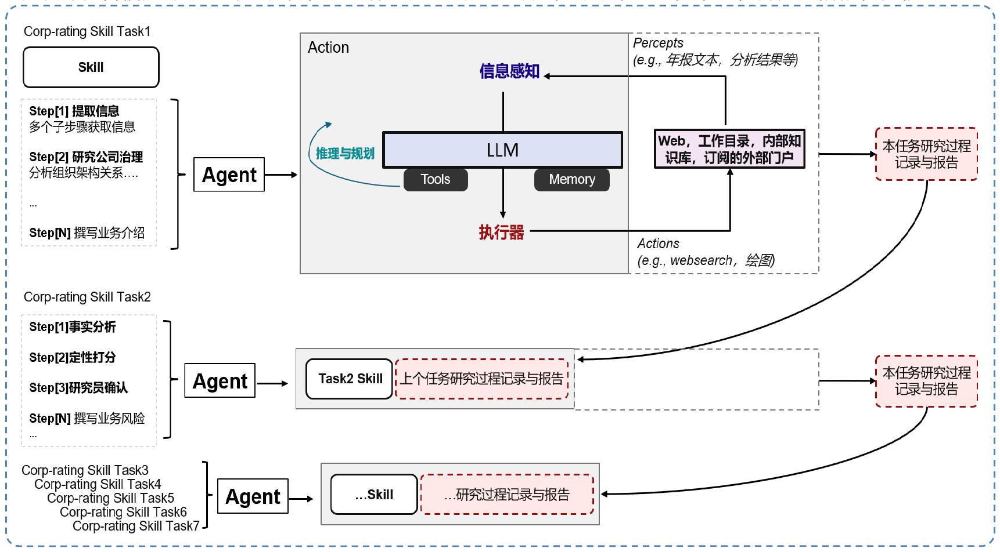
12
Agent 产品/工具与底座模型对比
- 产品与工具选型重点考察 Skill 兼容性、长文档处理、工具与桌面应用接入、权限治理及过程可追溯性，并需进行业务适配与回归测试。
- 信用研究以资料处理、跨应用协作和文档交付为主，Work 类 Agent 比 Code Agent 更匹配；综合能力与当前生态，优先选择 ChatGPT Work。
| Agent 产品/工具对比 | 优点 | 缺点 | |
|---|---|---|---|
| CW | ChatGPT Work｜Work Agent | ★跨工具协作，成果交付完整 | 受方案、权限和插件配置影响 |
 | Claude Cowork｜Work Agent | ★本地文件与应用协同，研究写作强 | 权限与数据治理要求较高 |
| WB | WorkBuddy｜Work Agent | ★本地办公、Skill/MCP、多模型 | 产品较新，稳定性需验证 |
 | Codex｜Code Agent | 文件、终端与代码执行强，多 Agent | 偏技术，使用门槛较高 |
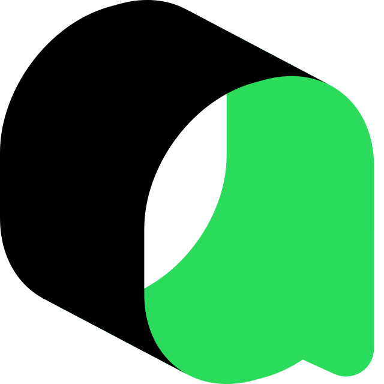 | Qoder｜Code Agent | 长任务、知识引擎、多 Agent | 效率与稳定性需验证 |
| Trae｜Code Agent | IDE 集成，多模型与执行轨迹 | 偏开发，办公适配有限 | |
 | OpenCode｜Code Agent | 开源、多模型、自部署 | 配置与运维成本较高 |
| 底座模型对比 | 优点 | 缺点 | |
|---|---|---|---|
 | GPT-5.6 Sol | 专业任务与工具调用强，1.05M 上下文 | 成本较高，需业务评测 |
 | Claude Opus 4.8 | 长任务与专业写作强，1M 上下文 | 成本与可用性需评估 |
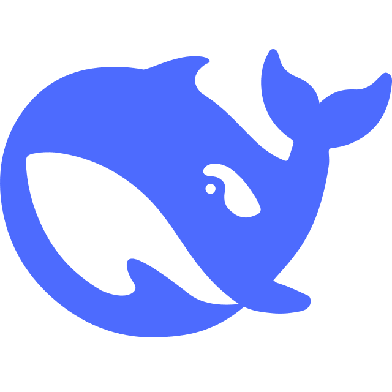 | DeepSeek-V4-Pro | 推理、工具调用与性价比，1M 上下文 | 多模态与办公集成需实测 |
 | Qwen3.7 Plus | 多模态、工具调用、1M 上下文 | 一致性与引用质量需评测 |
13
资料收集 / 格式解析 / 信息提取
- Agent 通过决策树判断所需资料来源。
- 通过内置字段映射规则实现数据自动提取与交叉验证
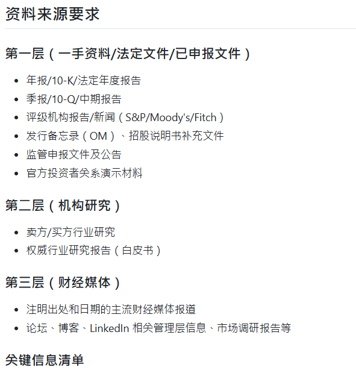
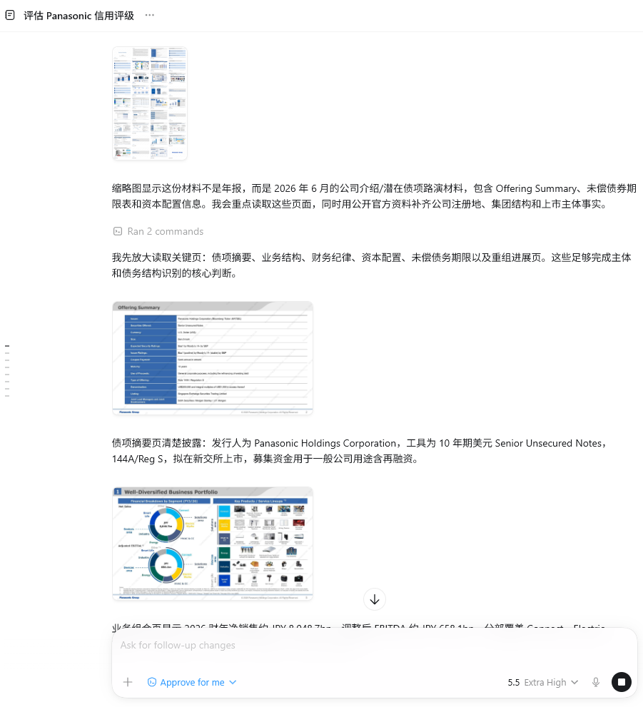
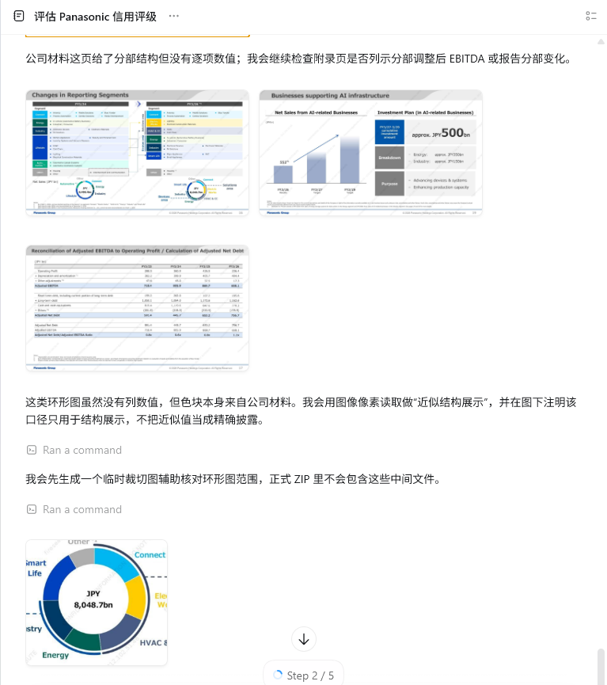
14
信用研究 AI Analyst —— 分析与计算
财务分析与计算
项目在财务分析阶段自动提取并标准化历史财务数据，计算盈利能力、资本结构、现金流和流动性指标，并依据既定阈值完成定量评分。
数据标准化 → 财务指标计算 → 定量评分 → 人工复核
15
信用研究 AI Analyst —— 报告撰写 / 图表制作
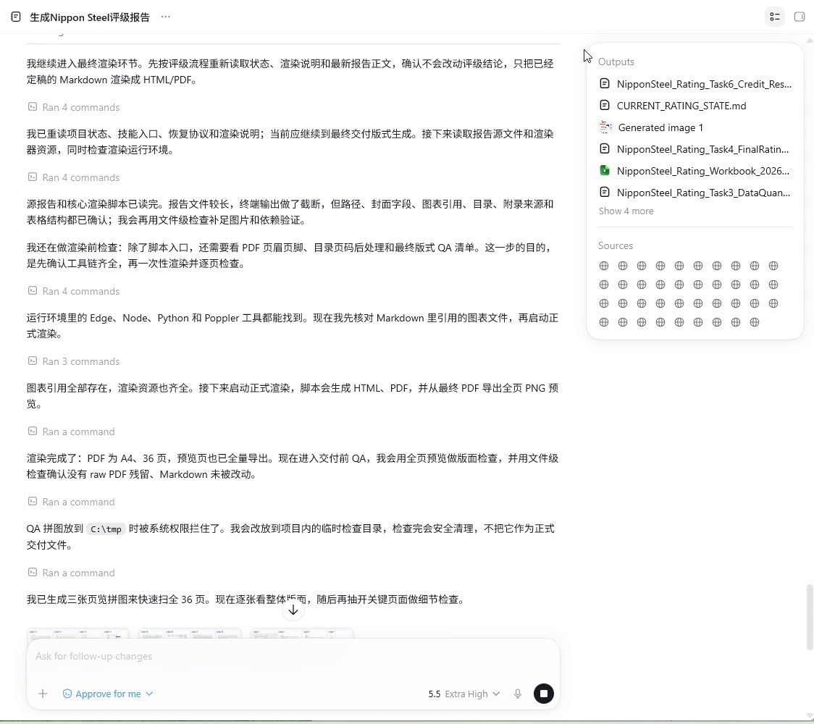
报告校验与交付前检查
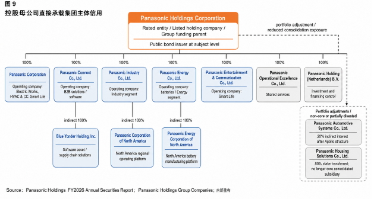
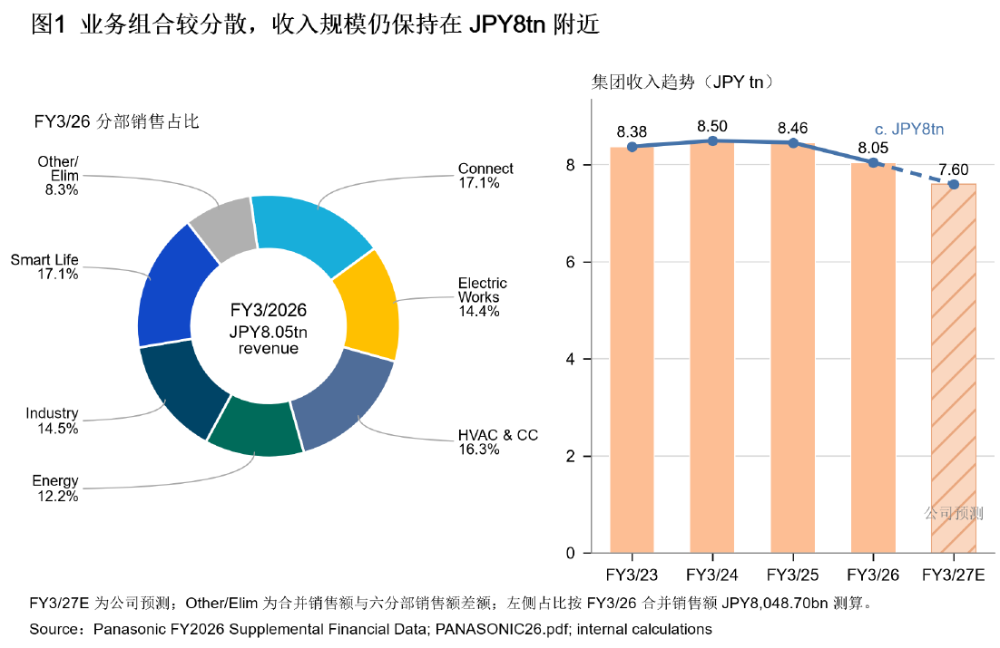
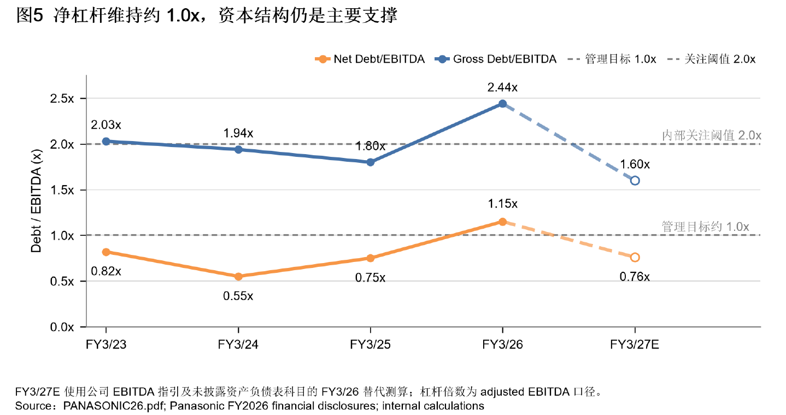
16
信用研究 AI Analyst —— QC 审查与交付
- 在关键节点嵌入 <脚本审查> 与 <多模态校验> 机制，确保评分逻辑、报告内容与输出格式的准确性，报告内容和内评打分完全可追溯。
- 报告形式方面，实现了语言规范统一、图表色系一致，保障了可读性与一致性。
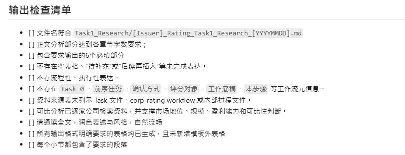
task1结束的输出检查清单
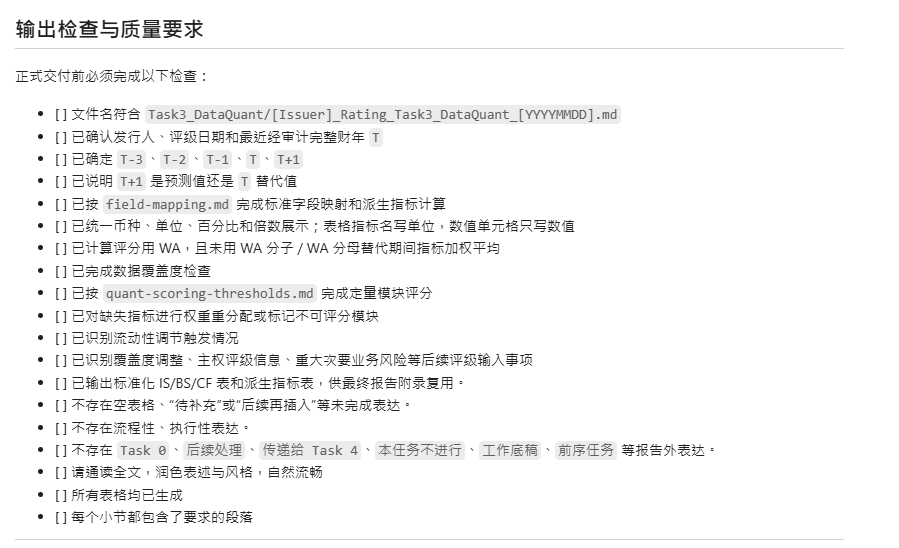
task3结束的输出检查清单
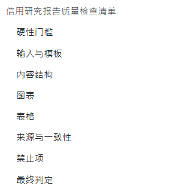
质量检查清单
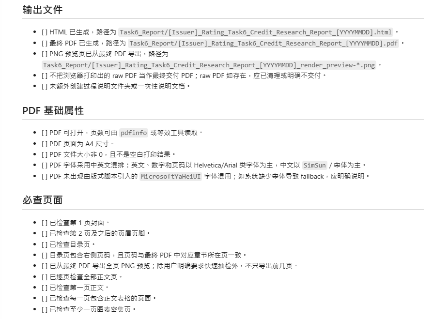
最终报告的输出检查清单
03
Agent 设计遇到的问题和经验分享
18
遇到的问题和经验分享
核心挑战
"Lost-in-the-Middle" 长流程专注力
在单线长流程复杂任务中使 Agent 保持专注力
解决方法：Task 拆分、上下文交互管理、subagent、暂停确认、上下文压缩
Agent 稳定性
复杂任务执行中保持输出一致性和可靠性
解决方法：few-shot，系统性校验机制，关键节点嵌入脚本审查与多模态校验
避免模型幻觉
防止 Agent 生成与事实不符或未经证实的内容
解决方法：数据点抽查、覆盖度校验、要求 Agent 承认资料缺失而非编造
实践经验
信息提取
输入数据来源多、格式杂、财务口径与主体口径不统一
明确使用工具的要求，保证每次都能提取到完整信息
写作风格
统一报告语言规范和表达风格
AGENTS.md 设置通用规则对风格进行约束
渲染交付
图表色系一致，保障可读性与一致性
统一 CSS 与渲染脚本链，PNG 预览校验、多模态视觉校验，内容与打分完全可追溯
19
问题与实践经验 1 —— 引入 subagent
- 创建 subagent，专门处理输入数据量大、噪声高、输出可压缩的任务。subagent 负责专业小项目，并只返回可引用的摘要结果。
- 以同业研究为例，通常涉及被研究对象以外同业可比公司大量年报、公告、投资者材料、评级报告和行业数据，但我们所需要的是高度精炼少量结论。我们用 peer_company_researcher 启动 subagent，subagent 每次只研究一家可比公司，重点输出核心事实、结论、关键证据。这样，主 Agent 不再直接处理全部原始材料，不会“lost in the middle”。
Subagent (Custom) Agent 工作流
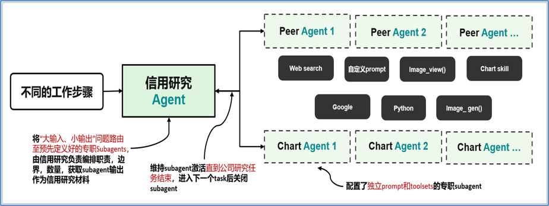
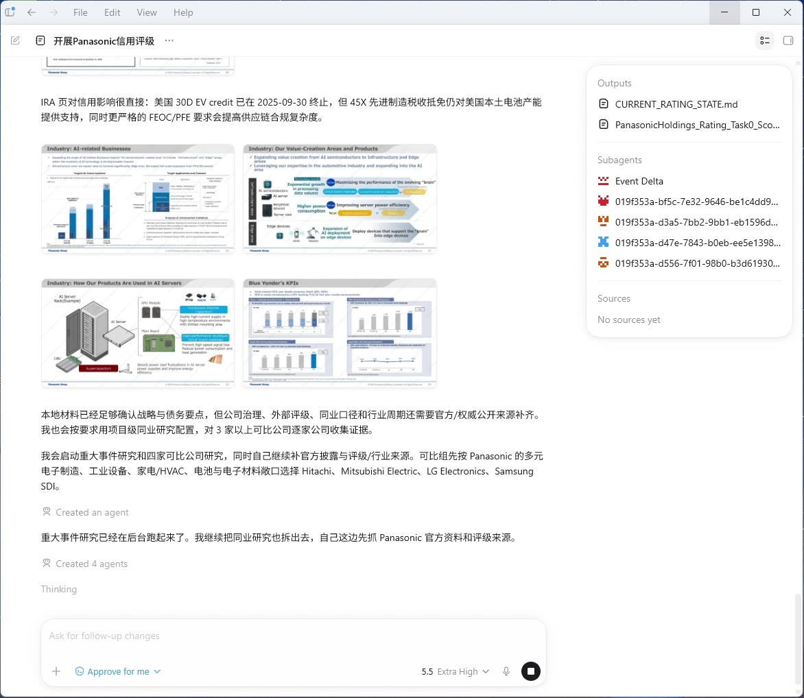
▶ 【动图】Subagent 总结了 5 家同业公司对比
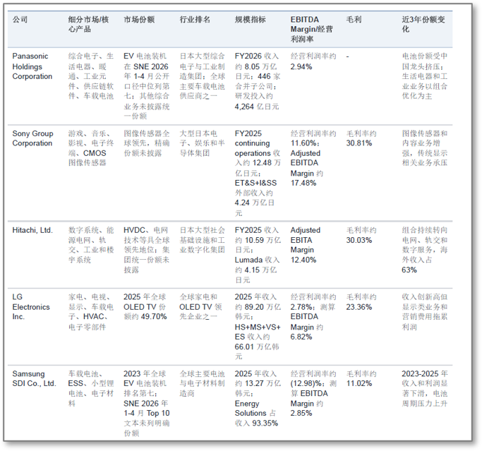
20
问题与实践经验 2 —— 阶段性摘要节点和主动上下文压缩
- 对于复杂任务，即便通过"Task 任务分解"，仍不能很好地解决"lost-in-the-middle"问题。
- 在每个 Task 里，我们通过设置"阶段性摘要节点"确保 Agent 输出达到质量要求，并通过主动上下文压缩控制上下文长度。
【阶段性摘要节点】
每完成一个章节（如公司概况、业务分析、财务分析），自动生成结构化摘要（含文字分析、数据表格），存入向量数据库。
【恢复锚点】
项目根目录维护 CURRENT_RATING_STATE.md：只记录当前进度、当前/下一步 prompt 路径与已完成输出路径的最小导航信息。属恢复用途、非交付物，不列为资料来源。
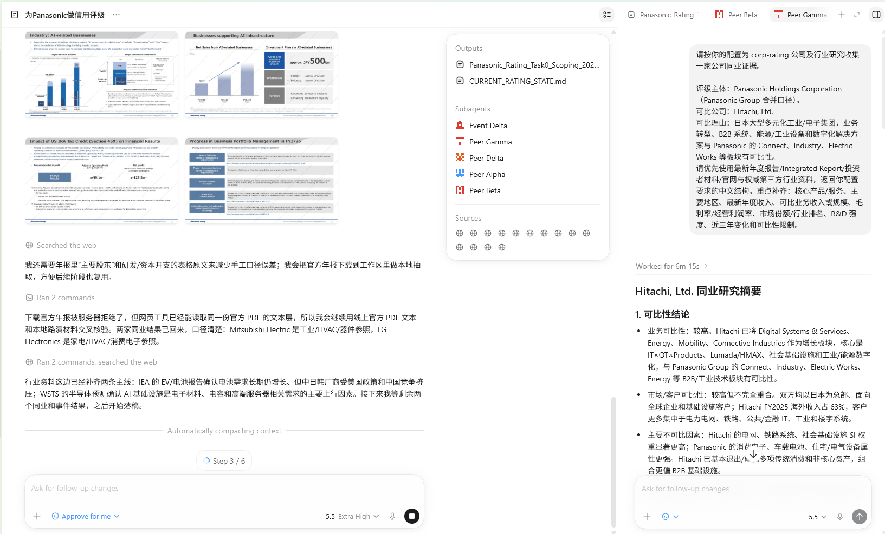
自动上下文压缩：主任务保留关键摘要，subagent 输出结构化结论
21
问题与实践经验 3 —— few-shot 提示词
- 当输入指令不够清晰时，Agent 随机尝试不同方案，导致产出不稳定的结论。
- 通过重复测试，我们发现重复出错的地方，补充更明确的 prompt。
- 以关键信息提取为例，我们给 Agent 明确的使用工具要求，保证每次都能提取到完整信息。
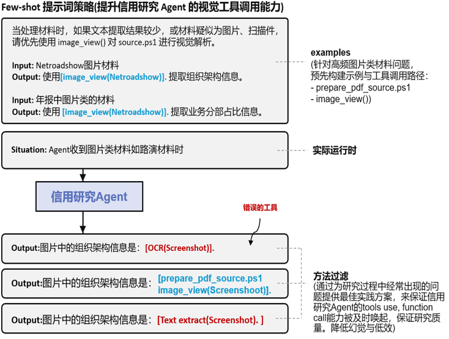
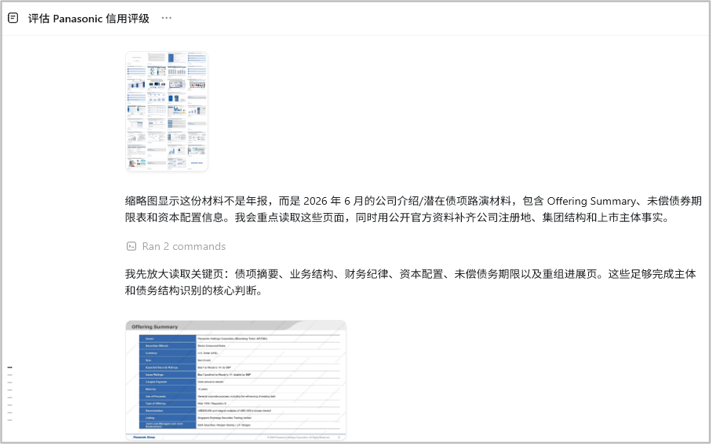
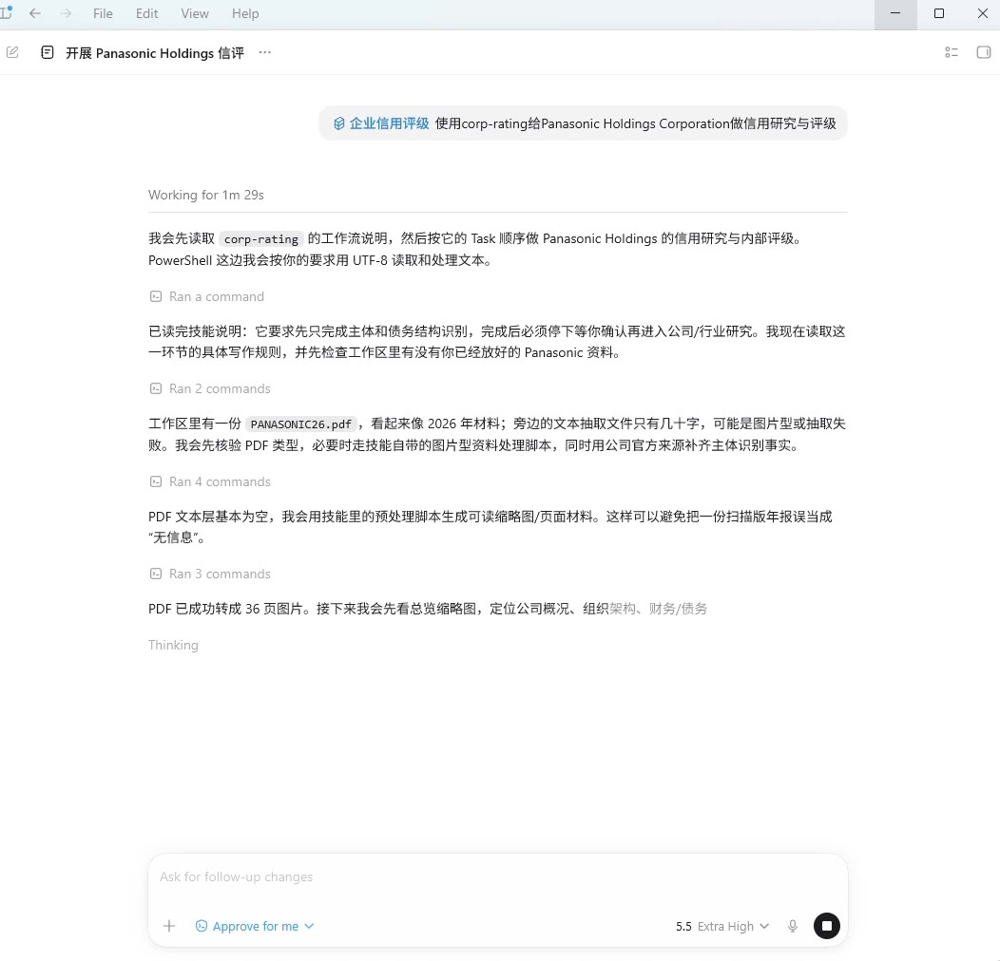
缩略图快速筛选关键材料页
22
问题与实践经验 4
—— Prompt Chaining 中防范幻觉问题的工具
结构化元数据锁定口径
嵌入 corp-rating-internal 字段，固定发行人、评级主体、合并口径与币种，防止长流程中口径漂移
外部状态替代模型记忆
以目录结构做状态管理，Task 结果落盘为阶段交付物，将上下文从模型短期记忆迁移至外部存储
单任务检查点控制
One Task at a Time，每个 Task 为明确检查点，通过阶段确认机制降低跳步与遗漏风险
数据溯源与缺失管控
关键数据保留来源与路径；缺失数据不编造、不补齐，必须标记并说明影响
ReAct 闭环校验
结合 QC checklist 激活推理—行动—校验机制，对主体、数据、评分和报告进行多维度检查
04
下一步计划
24
下一步计划
- 在架构上提升，使 Agent 能吸收反馈、自动补充规则与知识，实现"越用越聪明"的自我进化，并将每次学习沉淀为永久性知识资产。
- 形成信用研究首次覆盖、持续跟踪、风险预警、估值分析与投资建议的多 Agent 协作体系。
- 研究员有自己的 Agent 团队，专注不同行业，能力叠加 —— Agent 不是工具，是研究能力的放大器。
01
迭代更新
- 经过不断复用，经反馈 → 补充规则 → 验证，提炼新的通用规则
- 让 Agent 学会识别更多场景类型，适配差异化的评估策略和参数
- 通过"纠错"和"记忆能力"，让 Agent 不断自我改进
➤
02
扩展评级框架覆盖行业
- 升级银行、保险等金融机构等行业 Agent
- 升级跟踪评级 Agent，实现从首次评级到持续跟踪的完整覆盖
➤
03
多 Agent 协作
- 构建固收投研智能体体系
- 例如：债券估值、信用预警、组合管理 Agent 协同
25
学习反馈和迭代更新 —— 会学习的 AI Agent
核心机制
信息补充
自动识别数据缺口，主动检索外部信息，填补分析盲区
规则补充
从人工反馈中提炼新标准，优化评分规则与权重体系
场景补充
针对差异化主体适配评估策略，提升复杂案例处理能力
质量补充
持续校验输出一致性，迭代优化报告质量与专业水准
动态进化闭环
人工反馈与修正
▼
AI 提炼与规则生成结构化写入 Skill，更新知识库
▼
升级后的 Agent 输出
➤
价值沉淀
中期价值：能力进化
Skill 版本持续迭代升级
长期价值：资产积累
组织知识库永久性沉淀
26
多 Agent 协作的投研体系
- 长期设想是建立多 Agent 协作的投研体系。各层级 Agent 通过信号传递与决策反馈形成闭环协作，实现从数据分析到投资执行的全流程智能化。
- 分析员 Agent 相互独立并行。
Layer 1分析员
估值研究Agent
信用研究Agent
策略师Agent
技术面研究Agent
新闻跟踪Agent
▼
Layer 2策略层
组合策略 Agent
▼
Layer 3决策层
基金经理
谢谢
广发国际 固定收益部
信用研究 AI Agent 课题研究小组